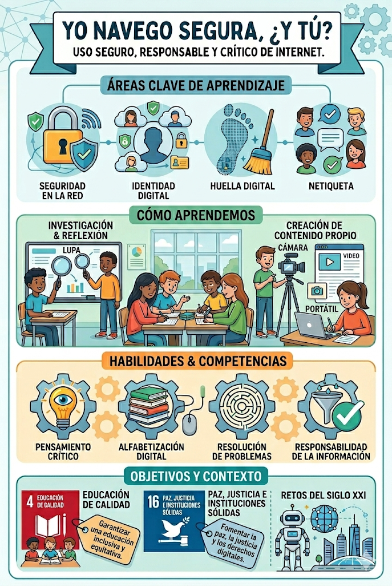

La presente Situación de Aprendizaje “Yo navego segura, ¿y tú?” se plantea con el objetivo de desarrollar en el alumnado un uso seguro, responsable y crítico de Internet, un entorno digital que forma parte de su vida cotidiana desde edades tempranas. En la actualidad, niños y niñas acceden de forma habitual a contenidos digitales, utilizan buscadores y se comunican a través de diferentes herramientas, sin ser plenamente conscientes de los riesgos asociados ni de la importancia de proteger su información personal. Por ello, resulta fundamental trabajar desde el aula aspectos como la seguridad en la red, la identidad digital, la huella digital y las normas básicas de comportamiento en entornos virtuales (netiqueta).
A través de esta propuesta, el alumnado aprenderá qué es Internet, cómo funciona y cómo utilizarlo de forma segura y responsable. El alumnado será capaz de adquirir información relacionada con la navegación por la web, el uso de buscadores y la comunicación digital, siempre desde un enfoque que fomente el desarrollo de la competencia digital y el pensamiento crítico.
El enfoque metodológico será práctico y participativo, permitiendo al alumnado investigar, reflexionar y crear contenidos propios relacionados con el uso responsable de Internet. De este modo, no solo adquirirán conocimientos sobre el funcionamiento de la red, sino que también desarrollarán habilidades para desenvolverse con autonomía y seguridad en el entorno digital.
Esta Situación de Aprendizaje contribuye al desarrollo de competencias clave necesarias para afrontar los retos del siglo XXI, especialmente en relación con el uso ético, seguro y responsable de las tecnologías digitales.
Asimismo, se vincula con los siguientes Objetivos de Desarrollo Sostenible (ODS):
- ODS 4: Educación de calidad, promoviendo una educación inclusiva que fomente la competencia digital y el aprendizaje significativo.
- ODS 16: Paz, justicia e instituciones sólidas, fomentando el respeto, la convivencia digital y el uso responsable de la comunicación en entornos virtuales.
Además, se trabajan habilidades fundamentales como el pensamiento crítico, la alfabetización digital, la resolución de problemas y la responsabilidad en el uso de la información.
